Independent concept, not a live project. This campaign wasn't commissioned, approved or run by Manychat. No ads were launched and no budget was spent. I've written it the way I'd pitch it from inside Manychat's growth team; that's a voice, not a claim to work there.
AI and authorship. The research, strategy, core idea and analysis are mine. AI helped me organise my thinking and tighten the writing. It wasn't a source of performance data.
Numbers and visuals. Every metric is a speculative benchmark, labelled Hypothesis and pitched a little above the SaaS industry average on Meta. Ad mockups were made with generative AI for presentation only.
01Desire is fast. Replies are slow.
It's 11:48 PM. Someone spots a ring in a Reel, falls a little in love, and DMs: “price?” Then they wait.
While the seller sleeps, Instagram keeps doing its job. It shows the buyer five similar rings. Another seller, with a lower price and a faster thumb, replies first. The seller wakes up at 9 AM and replies. The buyer has moved on. A customer lost, and nobody will ever know it.
“price?”, “still available?” and “do you ship?” aren't inbox clutter. They're buying signals. So my brief isn't “get sellers more enquiries”. It's “help them convert the ones they're already paying to generate”.
Convert more
Turn existing enquiries into buying opportunities.
Spend smarter
Get more out of current ad spend instead of buying new leads forever.
Save time
Automate the repetitive replies instead of typing each one.
Improve returns
Make more sales count without matching manual effort.
Speculative bar for the $3,000, 14-day test (Hypothesis). Measured on activated trials and paid conversions, not clicks or cheap signups.
02Sell exactly one thing
We do a lot at Manychat. My call for this campaign is to sell exactly one thing: replying to interested buyers without hand-answering every DM.
- Comment-to-DM: someone comments “RING” or “price” and gets an automated DM.
- Keyword triggers: “available?” or “do you ship?” set off automated replies.
- Shopify integration: product links connect, and contacts sync with e-commerce tools.
- Meta integration: runs on Instagram's official APIs; Manychat says it is an official Meta Business Partner.
The conversion event: a 14-day free trial
The campaign sends sellers to a paid-plan trial, not a generic free signup. The free plan's limits can choke sellers with busy inboxes; a paid trial lets them feel the product without those ceilings.
Why activation matters
A signup is the most flattering and least honest number on a dashboard. The real milestone is the first live automation. Speculative bar: 45% of trials connect Instagram within 48 hours, and 32% have a live automation within 7 days (Hypothesis).
Product limits to respect
| Product limitation | Creative implication |
|---|---|
| Follow-ups need buyer interaction to open a 24-hour window | Don't promise unlimited automated conversations |
| Non-follower DMs can land in Message Requests | Don't promise every reply is seen immediately |
| Without Shopify, product details may need manual flow setup | Don't promise an automatically connected catalogue |
03The broken buyer journey
I don't believe sellers are lazy. I believe desire just moves faster than one person can type. Honestly, this case study started with me on the buyer's side (Observed, firsthand): I DMed a seller about a unique piece, waited hours, and bought a lookalike elsewhere.
| Stage | Today | With Manychat | What the buyer feels |
|---|---|---|---|
| Discovery · 11:48 PM | Sees a one-of-a-kind ring in a Reel | Same | Desire: “I need this” |
| Question | Comments “price?” or DMs | Instant DM with photo, price, shipping and a “Buy now” button | Anticipation |
| Waiting | No reply. Keeps scrolling | No waiting | Doubt: “maybe it's sold” |
| Comparison | Finds a similar piece with a visible price | The original seller's link is already in their DMs | Desire goes to whoever is easiest |
| Decision | Buys from the competitor | Buys from the original seller while desire peaks | Satisfaction, attached to someone else's brand |
| 9:02 AM | Seller replies “Hi! Still interested?” to silence | The seller wakes up to an order | A lost sale they never knew about |
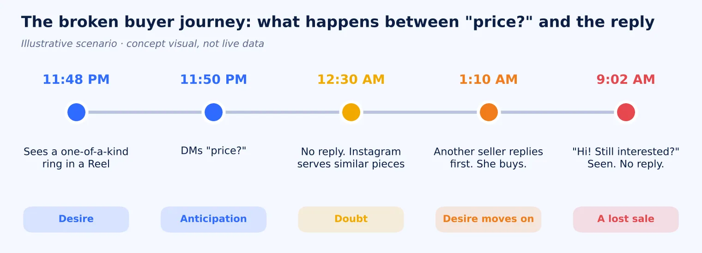
04Audience: meet Maya, 26
My bet is on independent US jewelry sellers who sell through Instagram. Their products spark impulse, their buyers compare fast, and the owner is usually the maker too, so nobody is free to reply. Small fashion and accessories boutiques come later.
Who she is
Runs a handmade jewelry shop from her spare room. ~$60K a year, pieces at $45–$180, 18K followers, 600–900 DMs a month (2,500 when a Reel takes off). Illustrative composite.
What she believes
“My customers want to talk to me, not a bot.” Her pieces are her identity, so a robotic reply feels like a betrayal.
What she wants
More sales from the attention she already gets, without living in her inbox.
Objections, and how the creative answers them
| Objection | How the creative answers it |
|---|---|
| “Instagram already does this for free.” | Its keyword reply waits 15 minutes; ours is instant, with photo, price and link. That proof lives on the landing page |
| “Bots feel cold. My buyers want me.” | Show the DM in her voice, signed with her name |
| “Will this get my account banned?” | Official Meta Business Partner, near the CTA |
| “It's too technical.” | “One post, one reply”, shown in under 3 seconds |
| “The price goes up as I grow.” | The trial is free; never lead with price |
This audience is problem-aware but only loosely solution-aware: comment-to-DM is linked with coaches handing out guides, not with selling jewelry (Interpretation). So the first three seconds of every ad show jewelry, not a generic “business”.
05The real rival is “good enough”
Our real rival for this seller isn't another app. It's Instagram's free tools plus replying by hand. And the whole category's messaging leaves the buyer's side of the story sitting there, unclaimed.
| Repeated claim | Example | Gap it leaves |
|---|---|---|
| “Every comment is a lead” | IGMsg | Lead language is for marketers. A jewelry maker thinks in pieces and buyers |
| “Works while you sleep” | IGMsg, Manychat partner content | Says what the tool does, not what it saves |
| “Safe, official Meta API” | Zapify, Inrō | A defensive claim. Useful near the CTA, weak as a hook |
| “Save hours, reclaim time” | Inrō | Efficiency is rational. It doesn't create urgency |
Meta Ad Library: Manychat
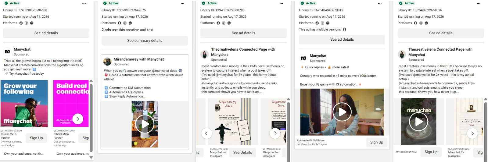
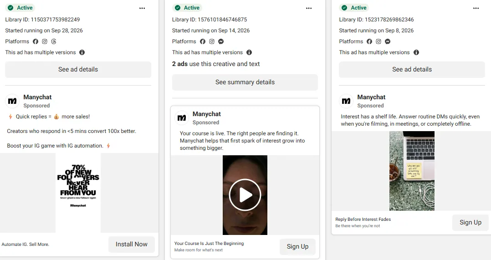
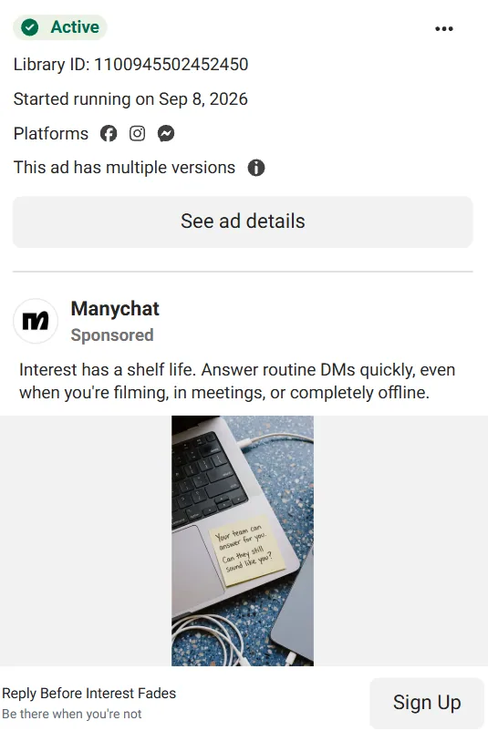
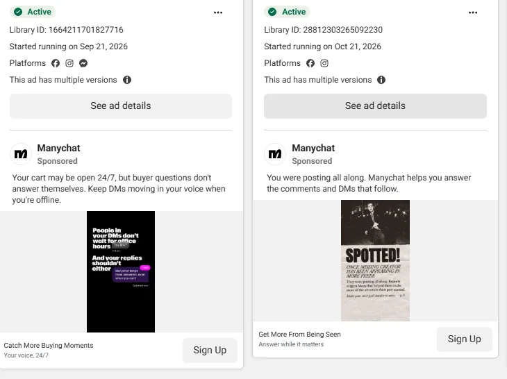
Meta Ad Library: competitors
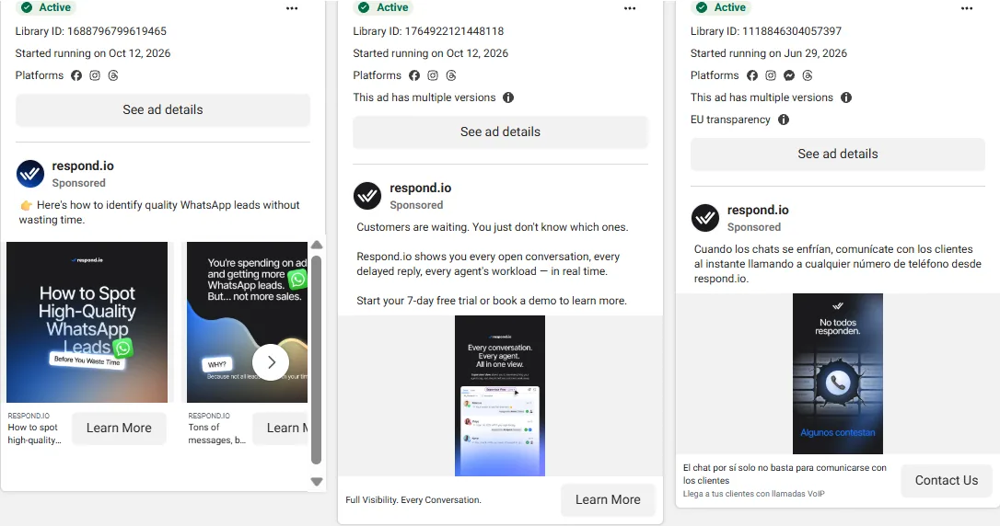
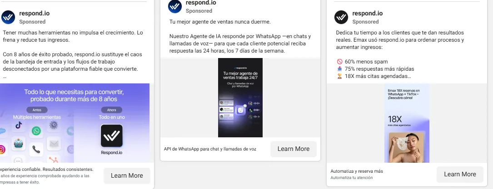
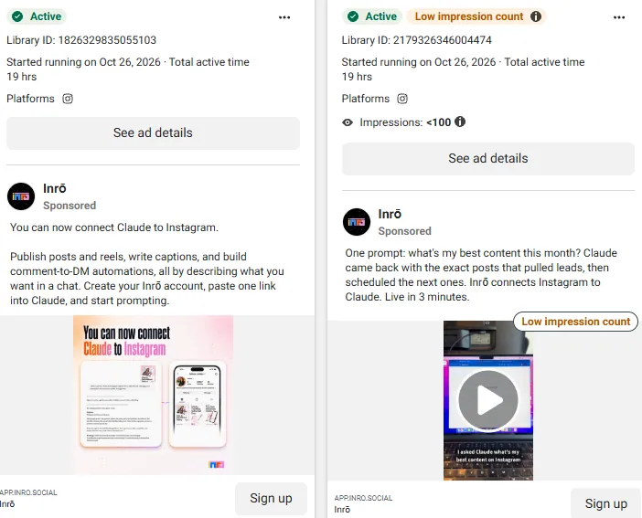
Meta Ad Library captures, Aug–Oct 2026. Click any capture to enlarge.
The opening (Interpretation): none of the messaging I reviewed shows the buyer's side, the moment the want fades and the sale walks off. None of it speaks to jewelry or product sellers specifically.
06Sell the sale they're losing
Message hierarchy
- Reframe: a question like “price?” is a potential buying signal.
- Stakes: a slow reply can mean a lost opportunity.
- Solution: Manychat can automate Instagram replies with product information and a link.
- Proof: a real customer question and the matching automated reply in the static creative.
- Action: the “Sign Up” CTA, with the destination making the 14-day free trial clear.
- Central idea
- The questions sellers treat as admin are buyers mid-purchase. Answer them while the desire is alive
- Emotional appeal
- The sting of a sale you never knew you lost, then relief and pride when it's yours
- Tone of voice
- Warm, observant, quietly witty. Slice-of-life storytelling in the spirit of Piyush Pandey's work: small human details, no hype
- What it is not
- A feature list, a “growth hack”, a robot mascot, a fake dashboard of revenue numbers
07Three ads, three motivations
Ad mockups made with generative AI for presentation only.
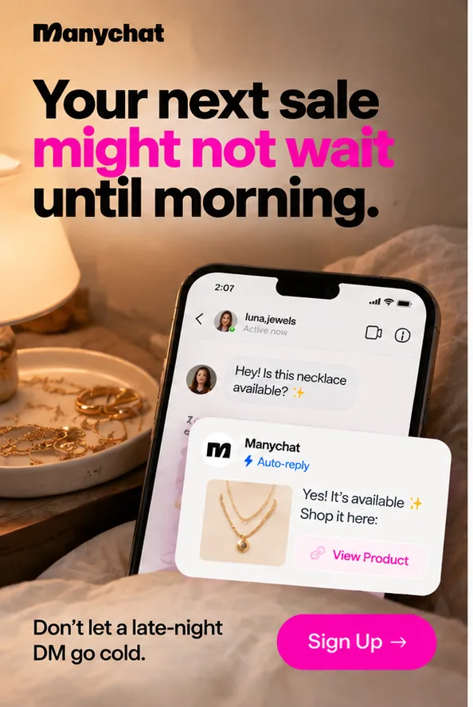
The 2 AM Order
Loss aversion · Cold audience → trial
- On image
- Your next sale might not wait until morning.
- Primary text
- A customer messages your Instagram shop while you're asleep. By morning, the moment to buy may have passed. Manychat helps you automate Instagram replies so customers get a response even when you're offline.
- Headline
- Don't let a late-night DM go cold.
- CTA
- Sign Up
Makes the cost of a delayed reply tangible, and tests whether a sales-loss angle brings more qualified trials than time-saving or growth.
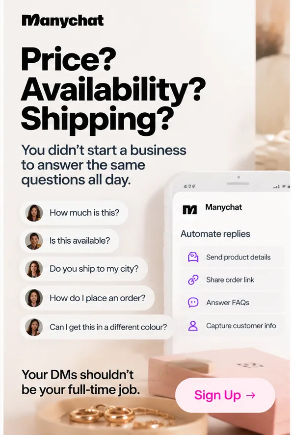
The Same Five Questions
Practical problem-solving · Cold audience → trial
- On image
- Price? Availability? Shipping? You didn't start a business to answer the same questions all day.
- Primary text
- Price. Availability. Shipping. The same questions, every day. Manychat helps you automate routine Instagram conversations, so you spend less time repeating answers.
- Headline
- Your DMs shouldn't be your full-time job.
- CTA
- Sign Up
Typography-led, repeated questions as message bubbles. Tests whether time lost to repetitive DMs motivates more qualified trials.
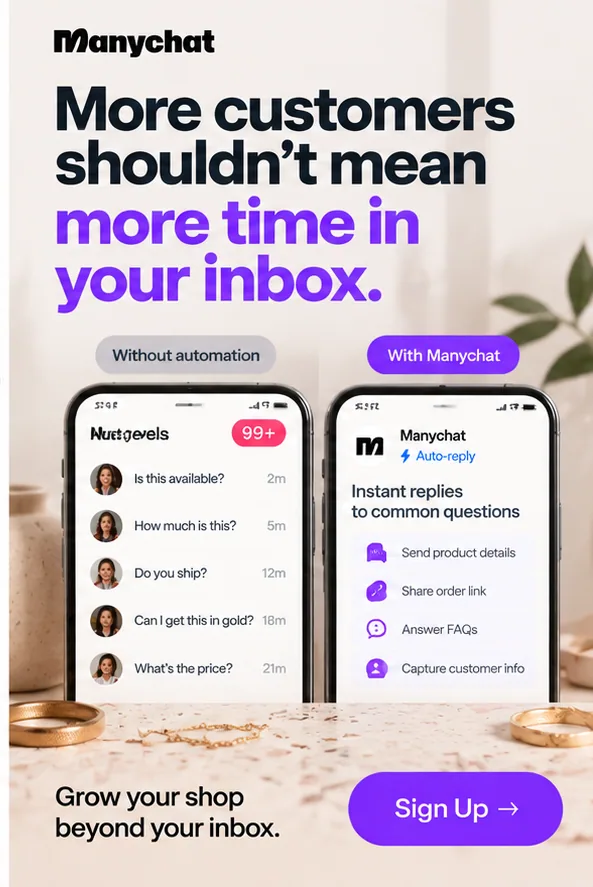
More Orders. Not More Inbox Time.
Growth aspiration · Cold audience → trial
- On image
- More customers shouldn't mean more time in your inbox.
- Primary text
- As your shop grows, so can the DMs. Manychat helps you automate Instagram conversations and guide customers to the next step.
- Headline
- Grow your shop beyond your inbox.
- CTA
- Sign Up
Before and after: a crowded inbox beside an organised flow. Never implies automation guarantees sales.
08One test, one question
Which motivation (loss aversion, practical problem-solving or growth aspiration) brings in jewelry sellers who actually activate an automation? Format, audience, offer and CTA stay identical, so the only thing on trial is the concept.
- Structure
- One campaign optimised for trial starts, three ad sets on equal fixed budgets, so Meta can't crown a winner early on cheap clicks
- Budget
- $3,000: $1,000 per concept, about $71 a day each (Hypothesis)
- Audience
- US, broad, with interests like jewelry making, handmade jewelry, Etsy, Shopify and small business
- Duration
- 14 days. No winner until each concept reaches 25 trial starts
| Outcome | Rule | Next step |
|---|---|---|
| Clear winner | Lowest cost per activated trial, ideally under $90, with 25+ trial starts | Scale it; run the hooks test inside it |
| Clear loser | Highest cost per activated trial and CTR under 1.2% | Pause it; keep its best hook |
| Split result | One wins attention, another wins activated trials | Activated trials win; try the attention winner's hook on the other's body |
| Inconclusive | Small gaps, or under 25 trial starts | Extend, or merge the strongest hooks on one body |
09Measure the habit, not the click
North-star metric: cost per activated trial, target about $90 (Hypothesis). I'd trade a thousand cheap clicks for one seller who goes live.
| Metric | Approx. industry avg | Speculative benchmark |
|---|---|---|
| CPM (US, broad) | ~$19 | $17 |
| Outbound CTR | ~0.9% | 1.2% |
| Trial-start rate | ~5% | 6% |
| Cost per trial | ~$45 | ~$30 |
| Live automation within 7 days | ~28% | 32% |
| Cost per activated trial | ~$160 | ~$90 |
| Trial-to-paid (activated) | ~20% | 25% |
Industry column is an approximate reference, not a sourced figure. These are internal targets only and never appear in ad creative.
When things break
CTR under 1.2%? Fix the headline and imagery before blaming the idea. Clicks but trials under 6%? The landing page is the suspect. Shoppers asking “where's this ring from?” means we're reaching buyers, not sellers. And one rule overrides the rest: a concept with the cheapest trials but the weakest 90-day retention gets its budget capped.
10Risks, and my recommendation
The biggest risk isn't a weak ad. It's a strong ad that promises more than the product delivers, so nothing says “never miss a sale”. A $3,000 test is small, so results stay directional.
So: three ads, one question, and a bar I've set a little higher than average. The next step is finding out which of my hunches survive contact with a real budget.
References (accessed October 2026)
- Manychat Blog and Community: Instagram DM automation rules, 24-hour rule
- Kanal, ChatMaxima, InstantDM, Blabla: Instagram automation setup and native limits
- Competitors: IGMsg, Inrō, SnapDM, Zapify
- PriceScope forum; Sprout Social Index coverage; Retail Brew (May 2026); The Convert Way; Payhip
- Meta Ad Library: Manychat and competitor ads, Aug–Oct 2026